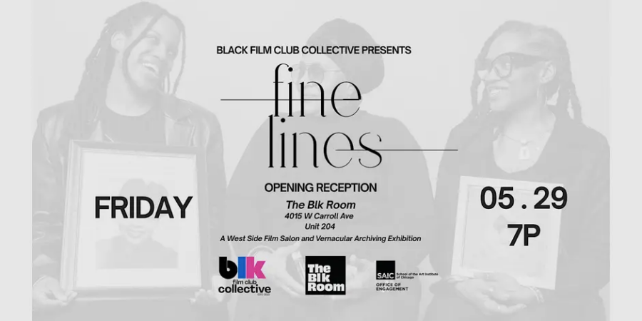

Fine Lines Exhibition
Black Film Club Collective is honored to present Fine Lines — our debut exhibition and opening reception.
Over the past several months, we’ve gathered through film screenings, community portraits, workshops, conversation, and story collection to explore a central question:
What do we choose to remember — and who gets to decide?
Developed during our residency at Nichols Tower through SAIC’s Office of Engagement, Fine Lines is a West Side film salon and vernacular archiving exhibition rooted in memory, migration, everyday life, and the quiet beauty of being seen.
The exhibition brings together family photographs, portraiture, oral histories, moving image, and archival exploration to reflect on Black life not as spectacle, but as living memory worthy of care, preservation, and reflection.